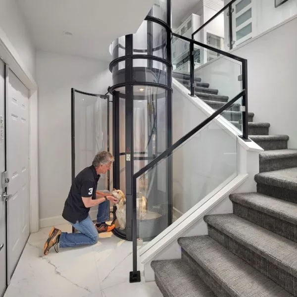

عطل طارئ
مصعد متوقف، باب لا يُغلق، أو توقف مفاجئ بين الأدوار. فريق الطوارئ يستقبل بلاغك في أي وقت ويتحرك فورًا.
فريق طوارئ مقيم في المدينتين على مدار الساعة. نصلّح جميع الماركات، وقطع الغيار من مصانعنا مباشرة — بدون انتظار استيراد.
املأ بياناتك وسنتصل بك — أو راسلنا واتساب مباشرة إن كان الوضع طارئًا.
مصعد متوقف، باب لا يُغلق، أو توقف مفاجئ بين الأدوار. فريق الطوارئ يستقبل بلاغك في أي وقت ويتحرك فورًا.
زيارات مجدولة لفحص الماكينة والحبال ولوحة التحكم وأنظمة الأمان، مع تقرير مكتوب بعد كل زيارة.
تغطية كاملة بزيارات ثابتة وأولوية في الطوارئ، وهو المطلوب نظاميًا للحفاظ على تشغيل المصعد.
كل الباقات تشمل فريق الطوارئ على مدار الساعة. الفرق في عدد الزيارات ونطاق التغطية.
| التغطية | أساسية | متقدمة | شاملة |
|---|---|---|---|
| الزيارات الدورية | كل شهرين | شهريًا | شهريًا |
| استجابة الطوارئ | ٢٤/٧ | ٢٤/٧ — أولوية | ٢٤/٧ — أولوية قصوى |
| تقرير فحص مكتوب | ✓ | ✓ | ✓ |
| قطع الغيار الاستهلاكية | — | ✓ | ✓ |
| قطع الغيار الرئيسية | — | — | ✓ |
| دعم شهادة السلامة السنوية | — | ✓ | ✓ |
| زيارات إصلاح غير محدودة | — | — | ✓ |
| اطلب عرض سعر | اطلب عرض سعر | اطلب عرض سعر |
التسعير حسب نوع المصعد وعدد الأدوار وحالته الحالية. المعاينة مجانية. يمكن تقسيط العقد عبر تابي وتمارا
نصلّح جميع الماركات — سواء ركّبناه نحن أو ركّبته شركة أخرى.

شمال الرياض بالكامل — العارض، النرجس، الملقا، حطين، القيروان، الياسمين — وباقي أحياء المدينة.
افتح في خرائط جوجلشمال جدة ووسطها.
افتح في خرائط جوجلأغلب الأعطال الكبيرة تبدأ بعلامات صغيرة. احجز معاينة مجانية وسنخبرك بحالة مصعدك بصراحة.